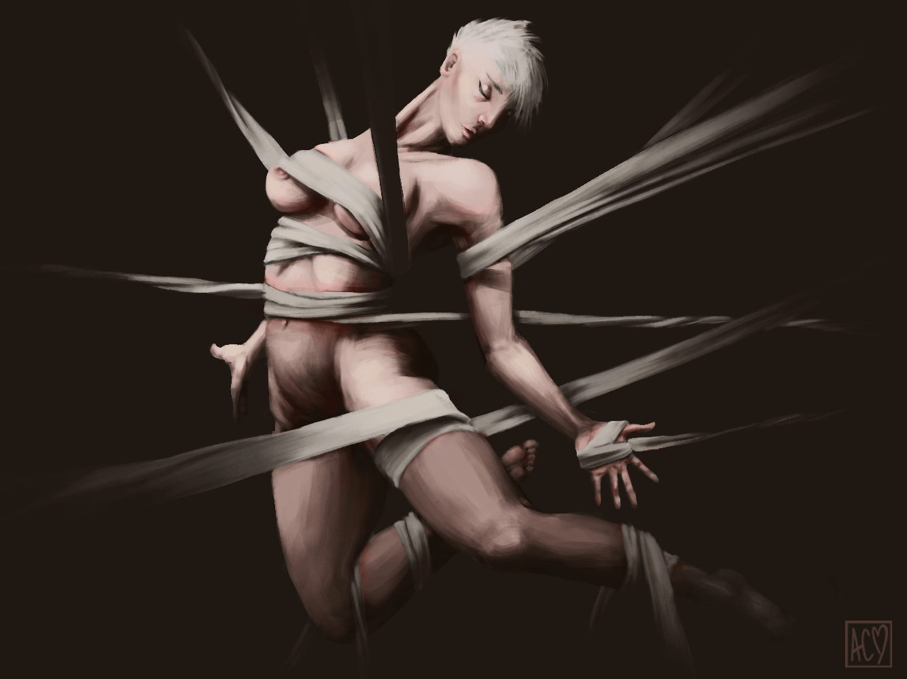
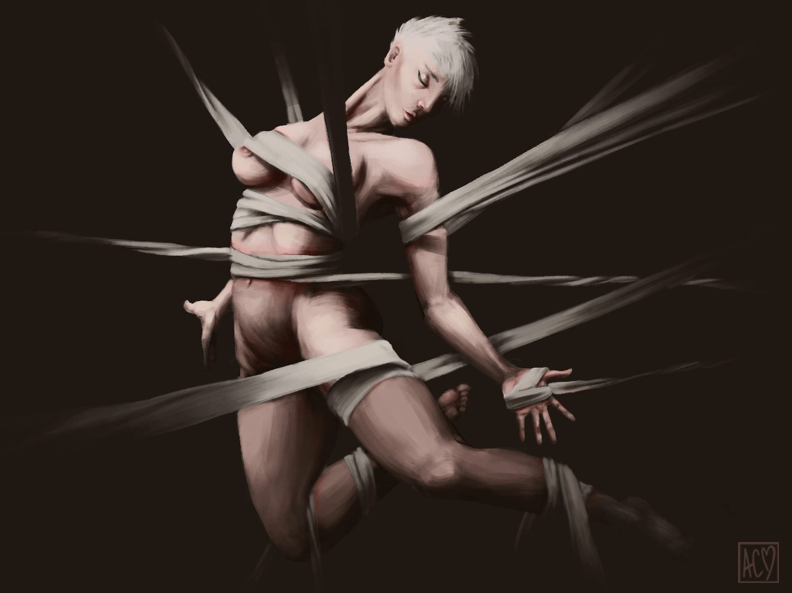

"Kiwi Imports" is a concept brand I created in order to showcase my ability to design a cohesive brand identity. The concept for this brand was an environmental friendly modern clothing brand for teens and young adults. I created the brand design within Adobe Illustrator and the mockups in Adobe PhotoShop.


 
